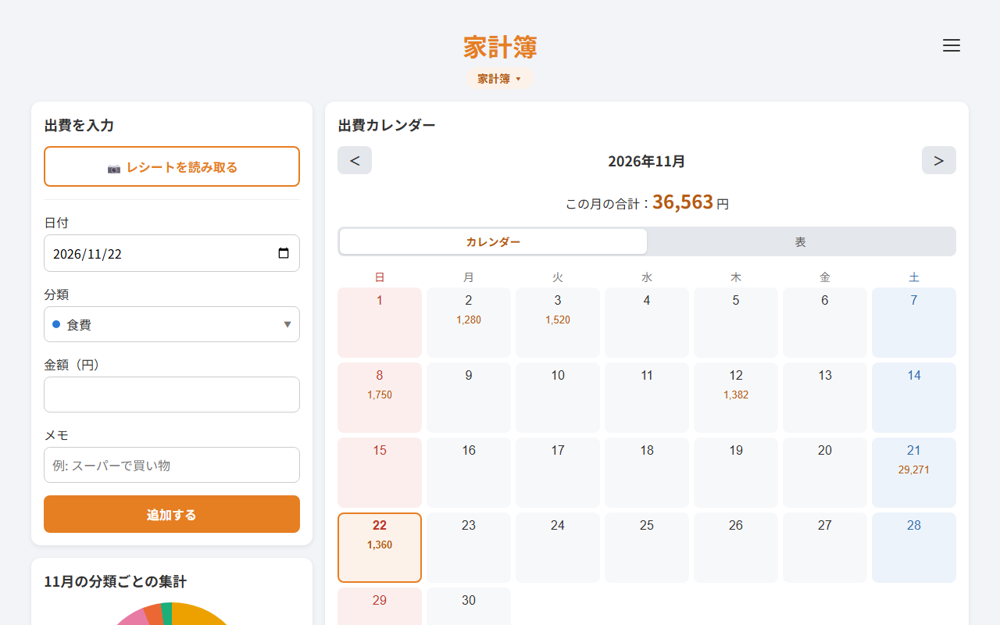

Futsal Player × AI Creator
OGAWA TAISEI
ピッチではフットサル選手として。
ピッチの外では、AI と一緒に
Web アプリを作っています。
About自己紹介
OGAWA TAISEI
フットサル選手 / AI × Web アプリ制作
フットサル選手として、日々ピッチで汗を流しているアスリートです。 チームで勝つために考え、走り、仲間と工夫を重ねる——その姿勢を、ものづくりにも生かしています。
ピッチの外では、AI（Claude Code）と一緒に、身の回りの「ちょっと不便」を解決する Web アプリを作っています。 1ステップずつ作り方を理解しながら進め、できるだけ無料のサービスだけで、スマホからすぐ使えるアプリにすることを大切にしています。
Works作品
勤怠ノート
出勤・退勤の打刻から、タイムカード・各種申請・カレンダーまでをまとめた勤怠管理アプリ。 スマホのホーム画面に追加して、アプリとして使えます。
- 打刻・タイムカード・申請・承認
- Google カレンダーとの連携
- 管理者と一般の権限の切り替え
※ 現在は PC の中で動かしています（公開準備中）